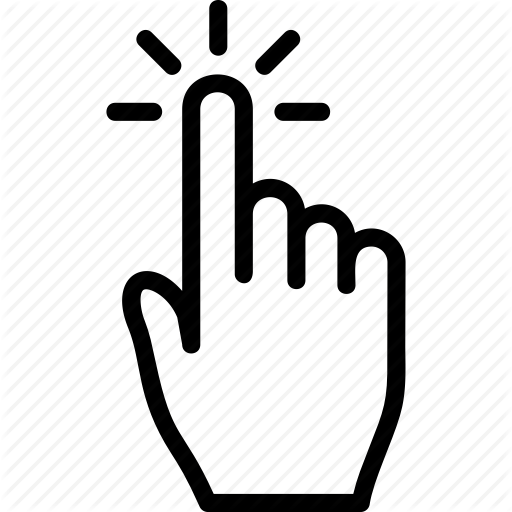
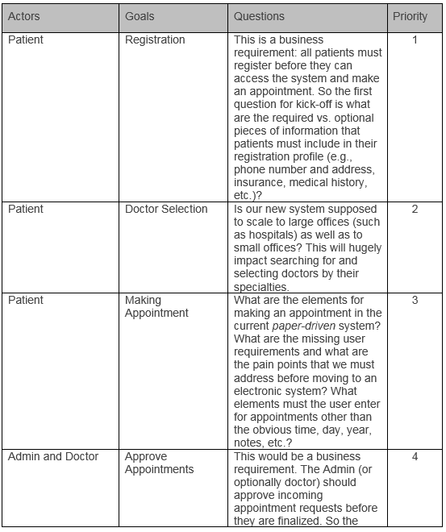
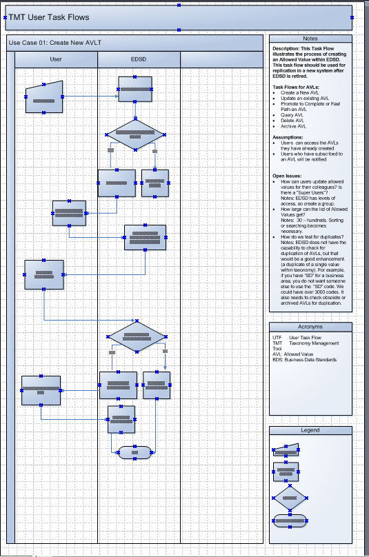

My UCD Cycle
Product development has changed substantially over the past few years with the adoption of Agile Methodology. I have been refining my own User-Centered Design cycle to help Agile teams become more successful at delivering products that the Product Owner and the end users find useful as well as easy to use. The User Experience discipline can adapt very well to Agile development by conducting early user research during the Planning Phase and by validating design concepts with users during the Design Phase. I have been able to contribute to the entire product lifecycle by combining my research and my design background.
Please click below for an interactive overview of the process that I follow to merge UCD with Agile.

1. Problem Statements
Problem statements provide a foundation for the start of the project.
They should be continually referenced throughout the duration of the
project to help the team stay focused and on track. It is important to
document the problems that need to be addressed not only from the
perspective of the Product Owner and stakeholders, but also from the
perspective of end users. During the Agile development this also helps ensure
that project stays focused on solving user problems and that items in the
product backlog are addressed accordingly.
2. Personas
Understanding the end user is the first
step toward creating a good design. I conduct user interviews and contextual
inquiries to help better understand the users and their technical
abilities; their expectations of the
product and their pain points, and their workflow in their work
environment. I create Personas as one of the deliverables at this stage
since it helps the team better understand who will be using the system
and why. For example, a new HR system that I designed included the Manager,
Employee, Human Resources, System Administrators, and Legal as the personas.
Creating personas for each
type of user; their interactions with the proposed system separately
and together, and highlighting their pain points created better awareness of
a holistic and efficient
system for my Agile team.
3. User Goals & Journeys
Understanding user motivations and documenting user goals create the blueprint of a good design. The most beautiful visual design and the most intuitive user interface will not be very valuable if end users do not find the product useful in the first place. User Goals at this stage are high level since users themselves think of their goals on a high level. For example, when I designed the aforementioned HR system, users would describe their goals to me in terms of I need to create annual performance goals (employee) or I need to approve performance goals (manager). I would then document the main user goals and ask questions to understand more details behind each goal (since each goal could be further divided into subgoals). The main deliverable at this stage would be a prioritized spreadsheet (or table) for Actors and Goals which the Agile team can use to track and make sure that the user goals are all addressed and prioritized in the design using the 80/20 rule.

4. Use Cases
While user stories and user goals describe the user needs with the product at a very high level, those goals must be broken down into specific tasks and steps in order to help users accomplish their goals in a user interface. Further, use cases must not only include the end user goals, but they must also include the business requirements as well as the technical requirements regarding the product behavior.
The use cases must demonstrate how the user steps through clear paths to accomplish each goal, and what the possible error conditions are and how to help the users out of those error conditions successfully. Some use cases apply to all users (e.g., user login) while some apply to only certain users, and some should be given higher priority than others. I typically deliver a Flowchart or a User Journey for each use case that demonstrates how users interact with the system (and each other) to successfully accomplish each goal. I take the best case scenario, the worst case scenario, and several other uses cases in between the two levels of difficulty, and ensure that my design can handle the entire range of complexity.

5. Wireframing and Interaction Design
I am skillful at prototyping my designs for the environment in which the product will be used (Desktop, Mobile, and Web) using the appropriate platforms such as Bootstrap, CS3, and jQuery. A clear and detailed interactive design is vital for user validation and Product Owner approval, for stakeholder demos, for evaluation with subject matter experts, and to estimate feasibility and the development time by the lead software developers.
Given the fact that UI design is a continuum, my wireframing and
interaction design techniques enable me to evolve the design from wireframes to
highly interactive prototypes very quickly. With the advent of
CSS3, Flexbox and CSS Breakpoints, it is becoming increasingly
important to design the final interaction behavior dynamically rather
than in static design and mockup tools. I have often heard feedback from
development teams that static prototyping tools which do not simulate
the real look & feel of the production code make it difficult for them
to understand the UX design intent, and my web development skills have
helped bridge that gap.
6. Usability Inspections
I use a variety of Usability Inspection techniques to evaluate my designs
(depending on the Agile development stage). These include Cognitive
Walkthroughs, Discount Usability
Evaluations (Heuristics), Pluralistic Walkthroughs, and Usability Testing
(both Formative and Summative). The
strengths of my rapid prototyping skills have been key for conducting
early user evaluations to ensure that not only the product
requirements are met from the user perspective, but that the design is
intuitive, learnable, and will have room to grow and adapt in the future. These
usability inspections help catch many user issues early on which
will substantially reduce rework by development teams later in the cycle.
7. User Interface Specification
Upon the approval of final design, I write clear functional specs for developers since relying on interactive prototypes alone is not sufficient in order to write detailed code. I define the behavior of the interface through redlines and control-action-response tables for developers, and I understand code well enough to be able to communicate with developers effectively when I describe the interaction behavior in terms of CSS and HTML attributes and events.
8. User Acceptance Testing
It is critical for UX Design to be involved during UAT when the
actual software is being tested, and analyze
direct feedback from users to determine if there are any Severity 1
issues with the product that should prevent it from being released. I
coordinate with the QA to make sure that we can detect, track,
prioritize, and address usability issues that are discovered during UAT.
9. Post-Release User Feedback
User feedback after each product release should be monitored in order discover new user requirements and to address any usability issues with the current release.